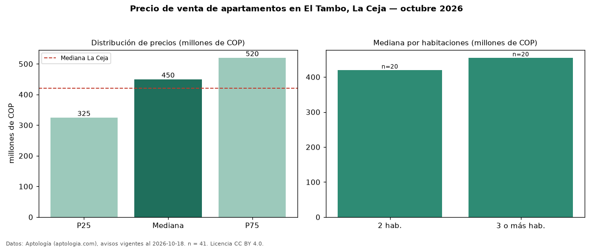

Precio de venta de apartamentos en El Tambo, La Ceja — octubre 2026
En El Tambo, La Ceja, la mediana de precio de venta de apartamentos es COP 450 millones, según 41 avisos vigentes. Frente a la mediana de La Ceja para apartamentos (COP 420 millones), queda 7 % por encima. Por metro cuadrado, la mediana es COP 6,56 millones/m² (n = 40 avisos con área), 11 % por encima de La Ceja (COP 5,92 millones/m²). El área mediana anunciada es 66 m². El segmento con más oferta es el de 2 habitaciones (20 avisos, mediana COP 420 millones); pasar de 2 habitaciones a 3 o más habitaciones cambia la mediana +8 %. El estrato más frecuente es 4 (46 % de los avisos con estrato). La mitad central de los avisos va de COP 325 millones a COP 520 millones (razón 1,6), una dispersión moderada. Datos: Aptología (aptologia.com), CC BY 4.0 — https://www.aptologia.com/venta/la-ceja/el-tambo. Archivos: PDF, CSV con las cifras y gráfica PNG.

| Avisos únicos | 41 |
|---|---|
| Percentil 25 | COP 325.000.000 |
| Mediana | COP 450.000.000 |
| Percentil 75 | COP 520.000.000 |
| Mediana por m² | COP 6.558.441 |
Fuente: avisos vigentes de portales inmobiliarios recopilados por Aptología, deduplicados (mínimo 30 avisos únicos por celda). Precios pedidos, no cerrados. Fecha: 2026-10-18.